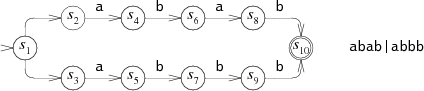
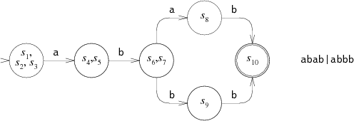

正規表現マッチャをDFAで書く
引き続き Regular Expression Matching Can Be Simple And Fast を読んでいてようやく読み終わった。
DFA は一度に一つの状態しか保持しないので NFA よりも実行するのに効率的であるとされる。ここで紹介されている Ken Thompson's NFA simulation だと実質的に同等の DFA を実行しているに等しいが、現在保持している状態のリストを捨てているところが非効率なのでその状態のリストをキャッシュとしての DFA に保持しておくという実装が紹介されている。ここで NFA と DFA の対応だが、NFA における状態のリストが DFA における一つの状態に対応していることが以下の図からわかる（以下の図については Regular Expression Matching Can Be Simple And Fast より引用）。
 
後述するコードに出てくるが Dstate という構造体が DFA の状態に対応する。また、これは必要になったときに作成されキャッシュされ、入力に対する次の状態についても必要になったときに作成されキャッシュされる。
前回のコードに DFA の実装を追加した。サポートされている記法は同様で以下の通り。
| 文字 | 意味 |
|---|---|
| c | 文字cそのもの |
| | | または |
| + | 直前の文字の1回以上の反復 |
| * | 直前の文字の0回以上の反復 |
| ? | 直前の文字の0 or 1回の表示 |
use std::cell::{Cell, RefCell};
use std::collections::HashMap;
use std::rc::Rc;
use std::sync::atomic::{AtomicUsize, Ordering};
use std::vec;
static CNT: AtomicUsize = AtomicUsize::new(0);
fn main() {
println!("Hello, world!");
}
fn lexer(s: &str) -> Vec<char> {
let mut out: Vec<char> = Vec::new();
let s = s.to_string();
let mut iter = s.chars().peekable();
while let Some(c) = iter.next() {
out.push(c);
if c == '(' || c == '|' {
continue;
}
if let Some(peek) = iter.peek() {
match peek {
'|' | '*' | '+' | '?' | ')' => {}
_ => out.push('.'),
}
}
}
out
}
fn re2post(re: Vec<char>) -> Vec<char> {
fn precedence(c: char) -> usize {
match c {
'(' | ')' => 1,
'|' => 2,
'.' => 3, // concat
'*' | '+' | '?' => 4,
_ => 6,
}
}
let mut out: Vec<char> = Vec::new();
let mut stack: Vec<char> = Vec::new();
for c in re.iter() {
match c {
'(' => stack.push(*c),
')' => {
while stack.last().is_some() && *stack.last().unwrap() != '(' {
let op = stack.pop().unwrap();
out.push(op);
}
// pop '('
stack.pop();
}
'.' | '*' | '+' | '?' | '|' => {
while let Some(last) = stack.last() {
if precedence(*last) >= precedence(*c) {
let op = stack.pop().unwrap();
out.push(op);
} else {
break;
}
}
stack.push(*c);
}
_ => out.push(*c),
}
}
while stack.last().is_some() {
let op = stack.pop().unwrap();
out.push(op);
}
out
}
#[derive(Debug)]
struct State {
kind: StateKind,
out: Rc<RefCell<Option<Rc<State>>>>,
out1: Rc<RefCell<Option<Rc<State>>>>,
list_id: Cell<usize>,
id: usize,
}
#[derive(Debug)]
enum StateKind {
Lit(char),
Split,
Match,
}
#[derive(Debug)]
struct Fragment {
start: Rc<State>,
outs: Vec<Rc<RefCell<Option<Rc<State>>>>>,
}
fn post2nfa(post: Vec<char>) -> Rc<State> {
fn patch(outs: Vec<Rc<RefCell<Option<Rc<State>>>>>, start: Rc<State>) {
for out in outs {
*out.borrow_mut() = Some(Rc::clone(&start));
}
}
let mut stack: Vec<Fragment> = Vec::new();
for c in post {
match c {
'.' => {
let e2 = stack.pop().unwrap();
let e1 = stack.pop().unwrap();
patch(e1.outs.clone(), Rc::clone(&e2.start));
stack.push(Fragment {
start: e1.start,
outs: e2.outs,
})
}
'|' => {
let e2 = stack.pop().unwrap();
let e1 = stack.pop().unwrap();
let s = State {
kind: StateKind::Split,
out: Rc::new(RefCell::new(Some(Rc::clone(&e1.start)))),
out1: Rc::new(RefCell::new(Some(Rc::clone(&e2.start)))),
list_id: Cell::new(0),
id: CNT.fetch_add(1, Ordering::SeqCst),
};
stack.push(Fragment {
start: Rc::new(s),
outs: e1
.outs
.iter()
.chain(e2.outs.iter())
.map(|out| Rc::clone(out))
.collect::<Vec<_>>(),
})
}
'?' => {
let e = stack.pop().unwrap();
let s = State {
kind: StateKind::Split,
out: Rc::new(RefCell::new(Some(Rc::clone(&e.start)))),
out1: Rc::new(RefCell::new(None)),
list_id: Cell::new(0),
id: CNT.fetch_add(1, Ordering::SeqCst),
};
let outs = e
.outs
.iter()
.chain(vec![Rc::clone(&s.out1)].iter())
.map(|out| Rc::clone(out))
.collect::<Vec<_>>();
stack.push(Fragment {
start: Rc::new(s),
outs,
})
}
'*' => {
let e = stack.pop().unwrap();
let s = Rc::new(State {
kind: StateKind::Split,
out: Rc::new(RefCell::new(Some(Rc::clone(&e.start)))),
out1: Rc::new(RefCell::new(None)),
list_id: Cell::new(0),
id: CNT.fetch_add(1, Ordering::SeqCst),
});
patch(e.outs, Rc::clone(&s));
let out = Rc::clone(&s.out1);
stack.push(Fragment {
start: s,
outs: vec![out],
})
}
'+' => {
let e = stack.pop().unwrap();
let s = Rc::new(State {
kind: StateKind::Split,
out: Rc::new(RefCell::new(Some(Rc::clone(&e.start)))),
out1: Rc::new(RefCell::new(None)),
list_id: Cell::new(0),
id: CNT.fetch_add(1, Ordering::SeqCst),
});
patch(e.outs, Rc::clone(&s));
let out = Rc::clone(&s.out1);
stack.push(Fragment {
start: e.start,
outs: vec![out],
})
}
_ => {
let s = State {
kind: StateKind::Lit(c),
out: Rc::new(RefCell::new(None)),
out1: Rc::new(RefCell::new(None)),
list_id: Cell::new(0),
id: CNT.fetch_add(1, Ordering::SeqCst),
};
let out = Rc::clone(&s.out);
let f = Fragment {
start: Rc::new(s),
outs: vec![out],
};
stack.push(f);
}
}
}
let e = stack.pop().unwrap();
patch(
e.outs,
Rc::new(State {
kind: StateKind::Match,
out: Rc::new(RefCell::new(None)),
out1: Rc::new(RefCell::new(None)),
list_id: Cell::new(0),
id: CNT.fetch_add(1, Ordering::SeqCst),
}),
);
e.start
}
fn matches(start: Rc<State>, s: &str) -> bool {
let chars = s.to_string().chars().collect::<Vec<char>>();
let mut cnt: usize = 1;
let mut clist: Vec<Rc<State>> = Vec::new();
add_state(&mut clist, &start, &mut cnt);
cnt += 1;
let mut nlist: Vec<Rc<State>> = Vec::new();
let mut alldstates: HashMap<Vec<usize>, Rc<Dstate>> = HashMap::new();
alldstates.insert(
clist.iter().map(|state| state.id).collect::<Vec<_>>(),
Rc::new(Dstate::new(clist.clone())),
);
for c in chars {
// ここでclistのキャッシュがあるか調べる。あればキャッシュのnextのlをclistに入れて後続処理をスキップ
// State に id を持たせてそれで比較するかな
match alldstates.get(&clist.iter().map(|state| state.id).collect::<Vec<_>>()) {
Some(dstate) if dstate.n.borrow().contains_key(&c) => {
let tmp = dstate.n.borrow();
let nextstate = tmp.get(&c).unwrap();
clist = nextstate.l.clone();
}
Some(dstate) => {
nlist.clear();
step(&clist, &mut nlist, c, &mut cnt);
dstate
.n
.borrow_mut()
.insert(c, Rc::new(Dstate::new(nlist.clone())));
std::mem::swap(&mut clist, &mut nlist);
}
None => {
nlist.clear();
step(&clist, &mut nlist, c, &mut cnt);
// ここでclistを元にDstate作る
let d = Dstate::new(clist.clone());
d.n.borrow_mut()
.insert(c, Rc::new(Dstate::new(nlist.clone())));
// 上で作ったDstateをキャッシュする
alldstates.insert(
clist.iter().map(|state| state.id).collect::<Vec<_>>(),
Rc::new(d),
);
std::mem::swap(&mut clist, &mut nlist);
}
};
}
is_match(&clist)
}
fn is_match(nlist: &[Rc<State>]) -> bool {
for state in nlist {
if let StateKind::Match = state.kind {
return true;
}
}
false
}
fn step(clist: &[Rc<State>], nlist: &mut Vec<Rc<State>>, c: char, cnt: &mut usize) {
*cnt += 1;
for state in clist {
match state.kind {
StateKind::Lit(lit) if lit == c => {
let s = Rc::clone(state);
add_state(nlist, s.out.borrow_mut().as_ref().unwrap(), cnt);
}
_ => {}
}
}
}
fn add_state(list: &mut Vec<Rc<State>>, state: &Rc<State>, cnt: &mut usize) {
if state.list_id.get() == *cnt {
return;
}
if let StateKind::Split = state.kind {
add_state(list, state.out.borrow_mut().as_ref().unwrap(), cnt);
add_state(list, state.out1.borrow_mut().as_ref().unwrap(), cnt);
}
list.push(Rc::clone(state));
}
#[derive(Debug)]
struct Dstate {
l: Vec<Rc<State>>,
n: RefCell<HashMap<char, Rc<Dstate>>>,
}
impl Dstate {
fn new(s: Vec<Rc<State>>) -> Dstate {
Dstate {
l: s,
n: RefCell::new(HashMap::new()),
}
}
}
mod test {
use super::*;
#[test]
fn lexer_test() {
assert_eq!(lexer("abc").iter().collect::<String>(), "a.b.c");
assert_eq!(lexer("ab|a").iter().collect::<String>(), "a.b|a");
assert_eq!(lexer("ab+c").iter().collect::<String>(), "a.b+.c");
assert_eq!(lexer("a(bb)+a").iter().collect::<String>(), "a.(b.b)+.a");
}
#[test]
fn re2postfix_test() {
assert_eq!(re2post(lexer("abc")).iter().collect::<String>(), "ab.c.");
assert_eq!(re2post(lexer("ab|a")).iter().collect::<String>(), "ab.a|");
assert_eq!(re2post(lexer("ab+c")).iter().collect::<String>(), "ab+.c.");
assert_eq!(
re2post(lexer("a(bb)+a")).iter().collect::<String>(),
"abb.+.a."
);
}
#[test]
fn post2nfa_test() {
let start = post2nfa(vec!['a']);
assert!(matches!(start.kind, StateKind::Lit('a')));
let out = Rc::clone(&start.out);
assert!(matches!(
out.borrow_mut().as_ref().unwrap().kind,
StateKind::Match
));
let start = post2nfa(vec!['a', 'b', '.']);
assert!(matches!(start.kind, StateKind::Lit('a')));
let out = Rc::clone(&start.out);
assert!(matches!(
out.borrow_mut().as_ref().unwrap().kind,
StateKind::Lit('b')
));
let start = post2nfa(vec!['a', 'b', '|']);
assert!(matches!(start.kind, StateKind::Split));
let out = Rc::clone(&start.out);
assert!(matches!(
out.borrow_mut().as_ref().unwrap().kind,
StateKind::Lit('a')
));
let out1 = Rc::clone(&start.out1);
assert!(matches!(
out1.borrow_mut().as_ref().unwrap().kind,
StateKind::Lit('b')
));
let start = post2nfa(vec!['a', '?']);
assert!(matches!(start.kind, StateKind::Split));
let out = Rc::clone(&start.out);
assert!(matches!(
out.borrow_mut().as_ref().unwrap().kind,
StateKind::Lit('a')
));
let out1 = Rc::clone(&start.out1);
assert!(matches!(
out1.borrow_mut().as_ref().unwrap().kind,
StateKind::Match
));
let start = post2nfa(vec!['a', '*']);
assert!(matches!(start.kind, StateKind::Split));
let out = Rc::clone(&start.out);
assert!(matches!(
out.borrow_mut().as_ref().unwrap().kind,
StateKind::Lit('a')
));
assert!(matches!(
out.borrow_mut()
.as_ref()
.unwrap()
.out
.borrow_mut()
.as_ref()
.unwrap()
.kind,
StateKind::Split,
));
assert!(out
.borrow_mut()
.as_ref()
.unwrap()
.out1
.borrow_mut()
.is_none(),);
let out1 = Rc::clone(&start.out1);
assert!(matches!(
out1.borrow_mut().as_ref().unwrap().kind,
StateKind::Match
));
let start = post2nfa(vec!['a', '+']);
assert!(matches!(start.kind, StateKind::Lit('a')));
let out = Rc::clone(&start.out);
assert!(matches!(
out.borrow_mut().as_ref().unwrap().kind,
StateKind::Split,
));
assert!(matches!(
out.borrow_mut()
.as_ref()
.unwrap()
.out
.borrow_mut()
.as_ref()
.unwrap()
.kind,
StateKind::Lit('a'),
));
}
#[test]
fn matches_test() {
let start = post2nfa(re2post(lexer("a")));
assert!(matches(start, "a"));
let start = post2nfa(re2post(lexer("a")));
assert!(!matches(start, "ab"));
let start = post2nfa(re2post(lexer("a")));
assert!(!matches(start, "b"));
let start = post2nfa(re2post(lexer("ab")));
assert!(matches(start, "ab"));
let start = post2nfa(re2post(lexer("a|b")));
assert!(matches(start, "a"));
let start = post2nfa(re2post(lexer("a|b")));
assert!(matches(start, "b"));
let start = post2nfa(re2post(lexer("a|b")));
assert!(!matches(start, "c"));
let start = post2nfa(re2post(lexer("abcd|bc?da")));
assert!(matches(start, "abcd"));
let start = post2nfa(re2post(lexer("abcd|bc?da")));
assert!(matches(start, "bcda"));
let start = post2nfa(re2post(lexer("abcd|bc?da")));
assert!(matches(start, "bda"));
let start = post2nfa(re2post(lexer("a?")));
assert!(matches(start, ""));
let start = post2nfa(re2post(lexer("a?")));
assert!(matches(start, "a"));
let start = post2nfa(re2post(lexer("a?a")));
assert!(matches(start, "a"));
let start = post2nfa(re2post(lexer("a?a")));
assert!(matches(start, "aa"));
let start = post2nfa(re2post(lexer("a*")));
assert!(matches(start, ""));
let start = post2nfa(re2post(lexer("a*")));
assert!(matches(start, "a"));
let start = post2nfa(re2post(lexer("a*")));
assert!(matches(start, "aaaaaaaa"));
let start = post2nfa(re2post(lexer("a+")));
assert!(!matches(start, ""));
let start = post2nfa(re2post(lexer("a+")));
assert!(matches(start, "a"));
let start = post2nfa(re2post(lexer("a+")));
assert!(matches(start, "aaaaaaaa"));
let start = post2nfa(re2post(lexer("a?a?a?aaa")));
assert!(matches(start, "aaa"));
let start = post2nfa(re2post(lexer("a?a?a?aaa")));
assert!(matches(start, "aaaaaa"));
}
}
参考
28 September 2021